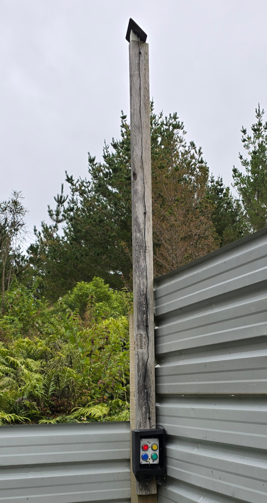
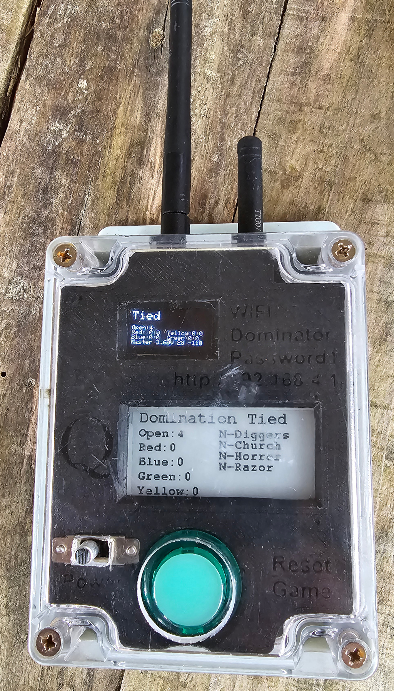

Q-Prop Creations
Domination Boxes
Boxes at strategic locations spread over the field each have four coloured buttons. Press your team's button to claim the objective, teh more objective your team holds the faster the points accumulate.
The boxes are solar powered with a LiPo battery and a LoRa radio. The Lora setup is a mesh, so each box only needs to be able to reach the next box to communicate.
An additional box operates as the controller, it is not fixed in place and does not have a solar panel so remember to charge it using a USB cable.


